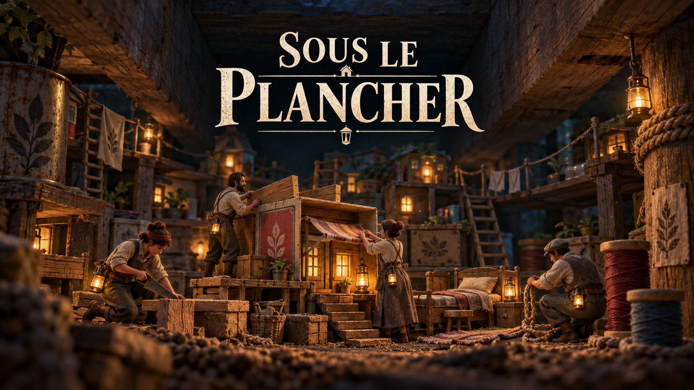
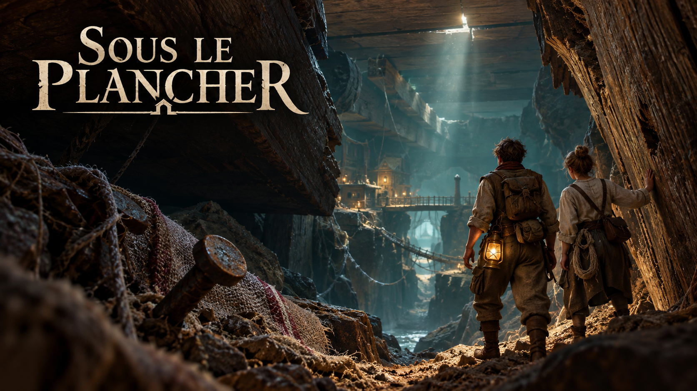
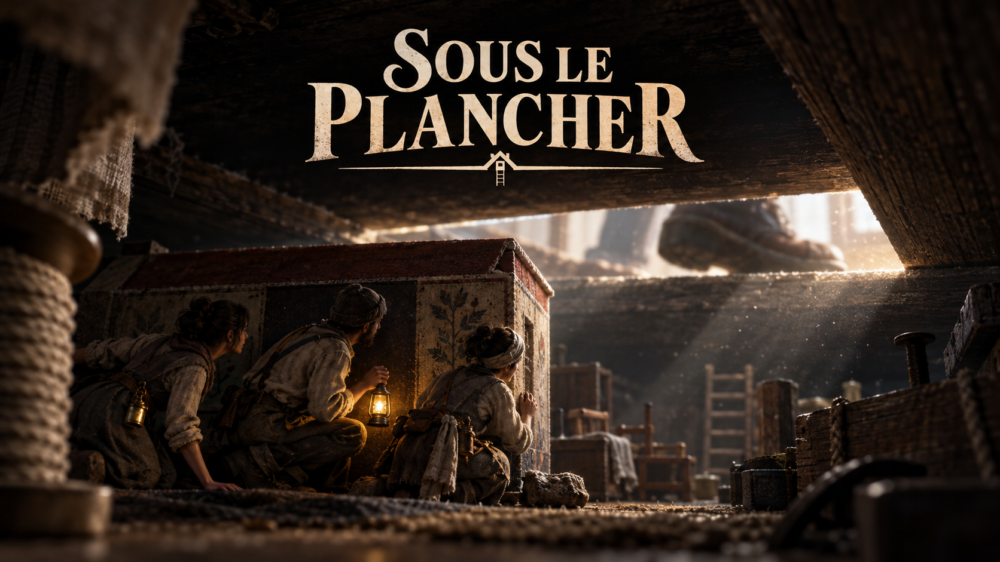
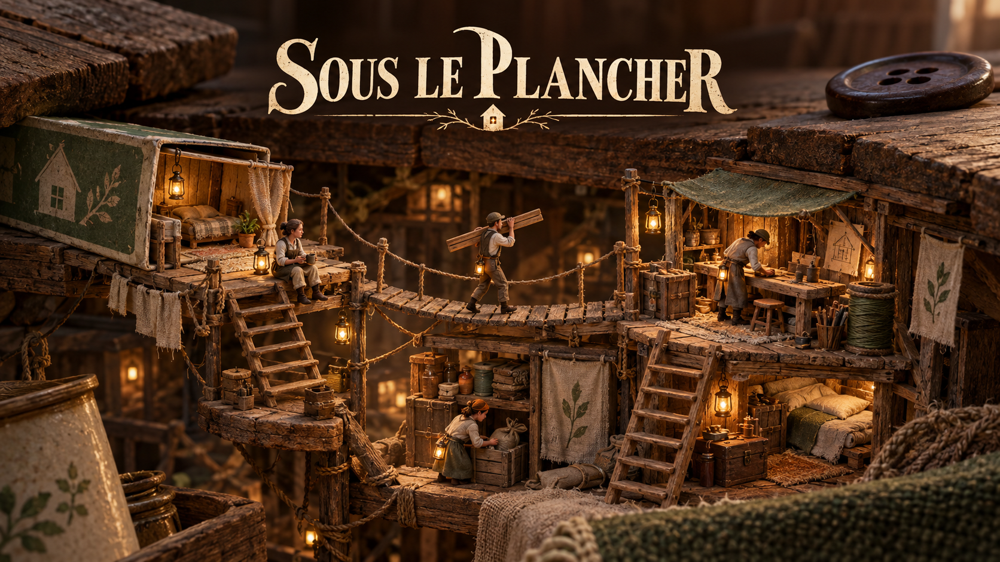
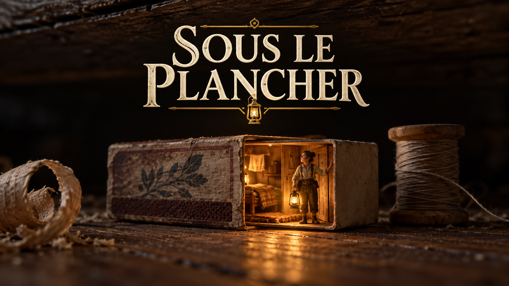

SOUS LE PLANCHER · RECHERCHE VISUELLE
Propositions d’écran de lancement. Cliquer sur une image pour l’ouvrir en entier.

La chaleur du refuge et l’entraide.

L’aventure dans un monde immense.

La fragilité de la colonie face aux humains.

La construction et la vie collective.

Une identité simple, centrée sur le refuge.